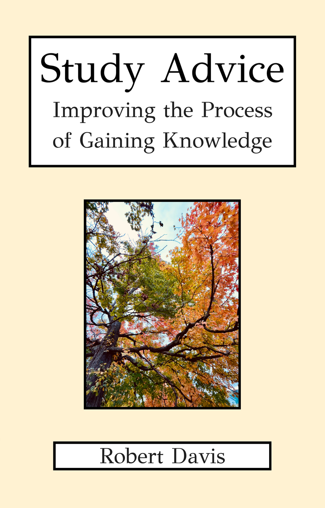

Book by Robert Davis
Study Advice: Improving the Process of Gaining Knowledge
This book presents studying as more than completing assignments or preparing for tests. It treats study as the deliberate activity of gaining knowledge: clarifying what one is doing, asking better questions, ordering the mind, using language carefully, and connecting learning to a larger purpose.
For students, parents, and thoughtful independent learners, the book offers a direct view of Robert Davis’s educational approach. It is practical, but not superficial. It gives attention to the habits and inner conditions that make strong learning possible: patience, focus, imagination, judgment, balance, and intellectual honesty.
A philosophy of learning, written in direct language
The book begins from a simple but demanding question: what are we really doing when we study? Its answer is not merely procedural. Studying is described as an effort to approach truth, order the mind, and become more capable of seeing and communicating what is real.
Break complexity into parts
Students are encouraged to slow down, define the problem, and divide difficult material into simpler pieces that can be understood with care.
Ask real questions
The book treats the learner’s own questions as serious acts of intelligence, not as obstacles to be rushed past.
Build mental unity
Attention, organization, and inner steadiness are presented as part of successful study, especially when restlessness or scatteredness appears.
Use technology deliberately
Technology is framed as a tool that should serve conscious purpose rather than fragmenting the student’s attention.
Think through language
The book examines how language can clarify thought, but also how unclear words can obscure what a student or author is trying to understand.
Connect study to purpose
Learning becomes stronger when it is integrated into a larger sense of life, responsibility, and service to others.
How the book relates to tutoring
Robert’s tutoring is rooted in the same principles that animate the book. A student does not merely need a finished paragraph or a corrected sentence. The student needs to understand the subject, recognize the task, gather the mind, and discover what can responsibly be said.
In tutoring, this can mean breaking down a prompt, asking what a text actually says, testing a possible thesis, organizing evidence, or explaining an idea aloud before trying to write it formally. The book makes clear why these steps matter: strong writing grows from genuine knowledge.
This approach is especially valuable for students who are intelligent and capable, but become uncertain when they have to begin an essay, form a thesis, or turn scattered insight into ordered expression.
Credibility through substance
In Study Advice, Robert Davis’s educational character is revealed through the substance of the work itself: an educator who has thought seriously about the nature of learning, not only about the immediate completion of assignments. The book shows a mind concerned with knowledge, language, discipline, purpose, and the moral seriousness of intellectual development.
That matters because effective tutoring depends on more than quick corrections. It depends on the tutor’s ability to see the student’s difficulty at its root: confusion about the prompt, uncertainty about evidence, scattered attention, vague language, undeveloped judgment, or a missing sense of purpose. The book gives a clear account of these deeper issues and the kind of patient work that can address them.